For the grand wedding at the Ambani residence, Antilia in Mumbai globally recognised designers Jeff Leatham and Sandeep Khosla were hired. The colours red and gold were used to decorate the entrance and give it a grand look. They managed to give the Ambani house an enchanting appeal.
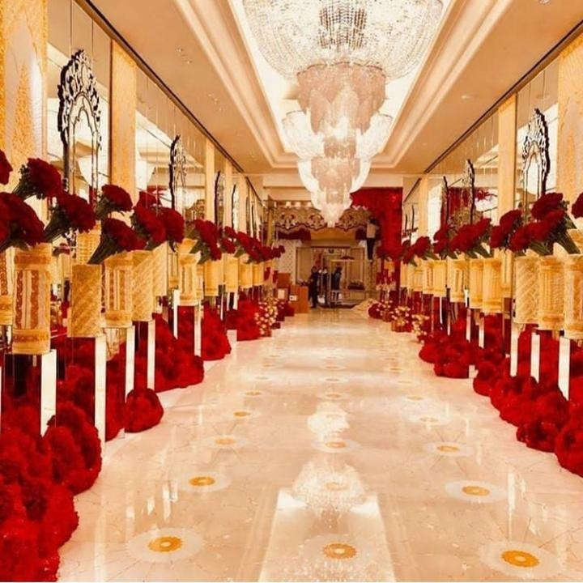
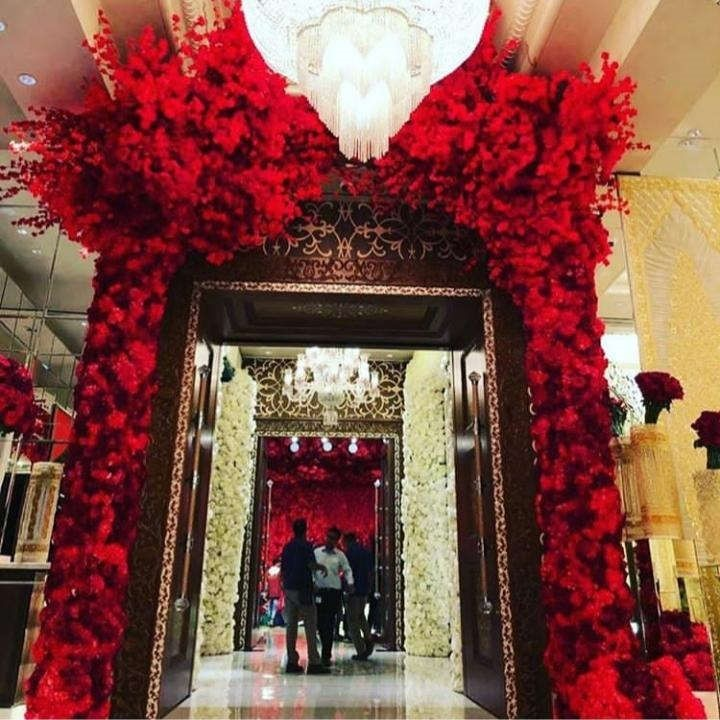


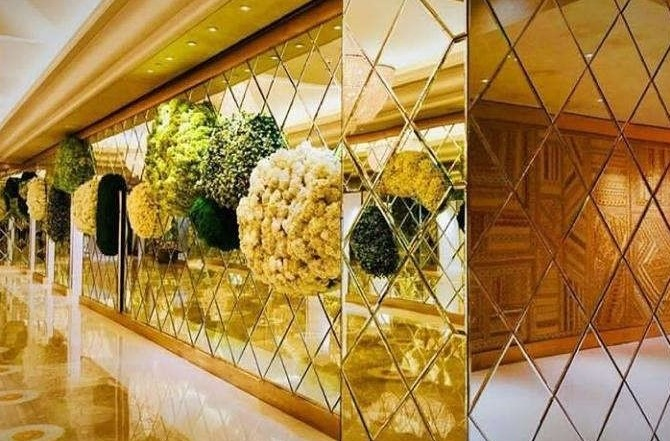
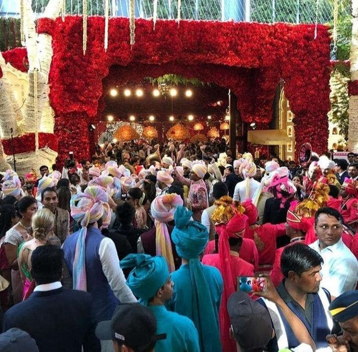 For her special day, Isha Ambani chose designer-duo Abu Jani Sandeep Khosla. She wore a gold coloured lehenga and added a sentimental approach to her outfit by draping her mother's wedding saree with her lehenga. She wore a 16-panelled ghagra made with two shades of offwhite, each panel hand-embroidered with Mughal jaalis and floral panels.She looked breathtaking in the beautifully embroidered wedding attire.

Isha’s brothers did not fall behind in making their mark too at the wedding. Anant and Akash Ambani made a grand entrance on horses and waited to welcome Mr Piramal's family.
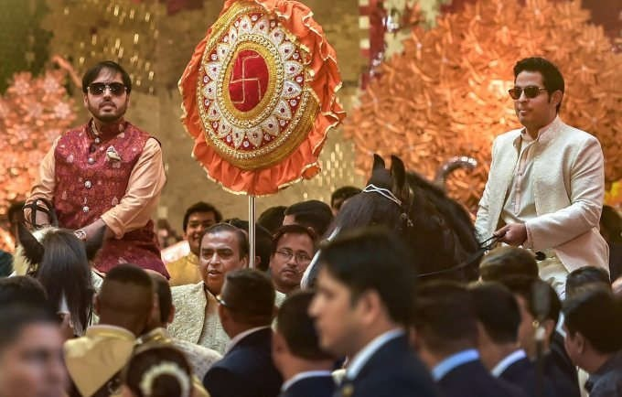 The entire street was decorated with majestic floral arrangement in anticipation of the event and crowds of residents turned out to line road and watch the arrivals.
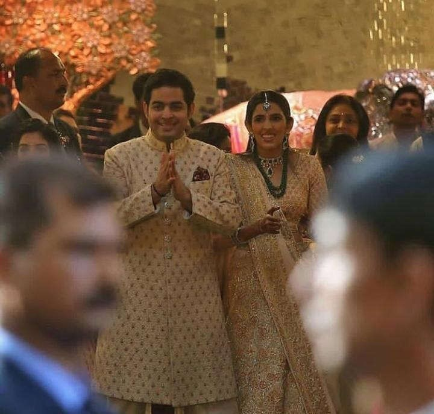
Anant Ambani and Shloka Mehta
A video released by the family's PR team shows snippets from the wedding ceremonies. The video shows the Varmala ceremony the bride and groom which was followed by the Kanyadaan. The bride's father, billionaire Mukesh Ambani hands over his daughter to Anand Piramal. Anant Ambani, Shloka Mehta and the bride and groom's family were seen sitting around the couple during the rituals. After this, the pheras were taken around the fire. Nita Ambani is then seen hugging her daughter. Anand Piramal is seen putting sindoor on Isha Ambani's forehead. Then he ties a mangalsutra to the Isha's neck. They then take the blessings of elders by touching their feet. In the background voice of the video, Amitabh Bachchan was heard narrating the feelings of a father when giving away his daughter during Kanyadaan.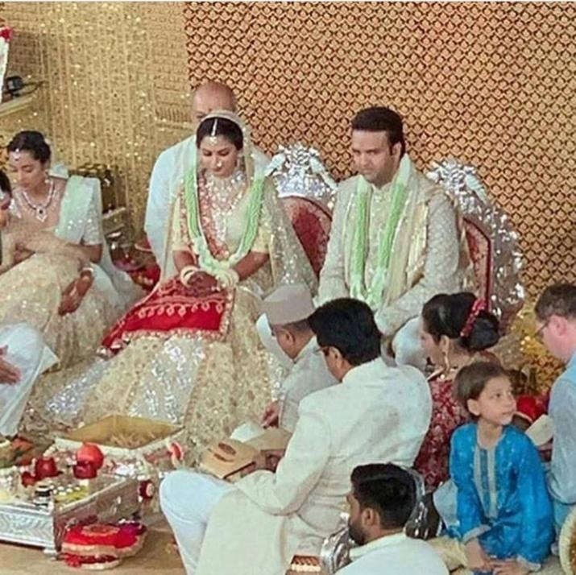

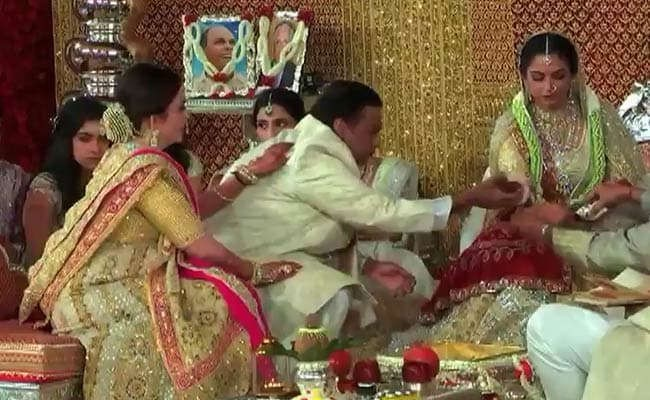 All ceremonies witnessed an entire Bollywood theme with performances by big stars and the Ambanis themselves. From Amitabh Bachchan and his entire family including daughter-in-law Aishwarya, wife Jaya, daughter Shweta, son Abhishek and cute granddaughters Aaradhya and Navya Nanda, to the newlywed celebrity couples, Priyanka and Nick Jonas and Deepika Padukone and Ranveer Singh, well known faces from various fields were seen at the massive festivities.


The Bachchan Family

Priyanka Chopra and Nick Jonas
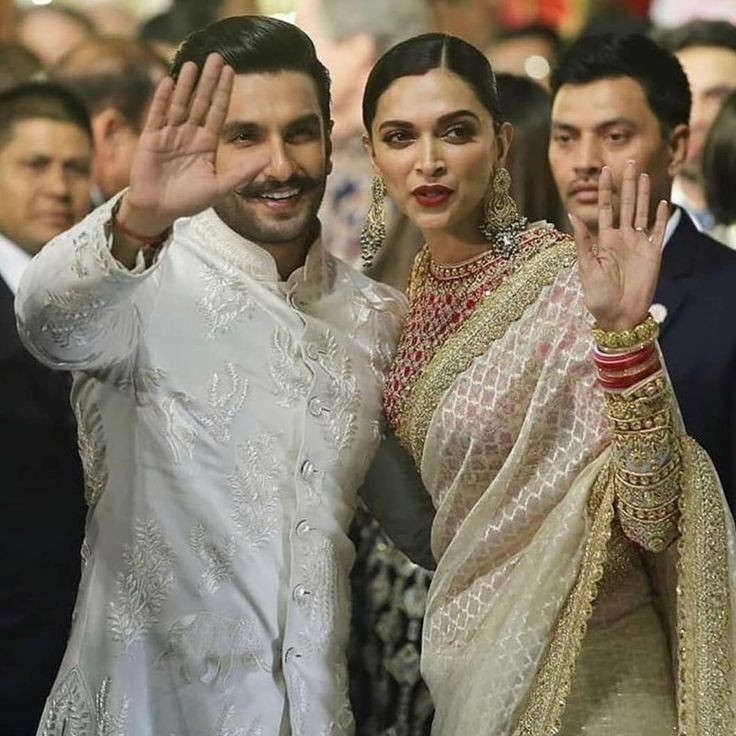
Ranveer Singh and Deepika Padukone
The wedding was star-studded not only with national but also with International celebrities. It was a high profile wedding ceremony with some the most prominent personalities like Pranab Mukherjee, Hillary Clinton, Ratan Tata, Amitabh and Jaya Bachchan, Rajinikanth with wife Lata.
 Former President, Pranab Mukherjee
Former President, Pranab Mukherjee
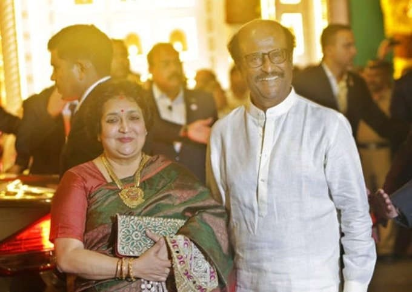Rajinikanth with wife Lata
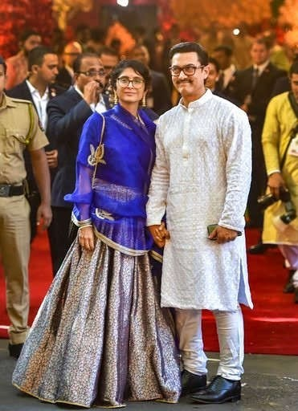Amir Khan with wife Kiran
 Dancers arrived to entertain the guests
Dancers arrived to entertain the guests
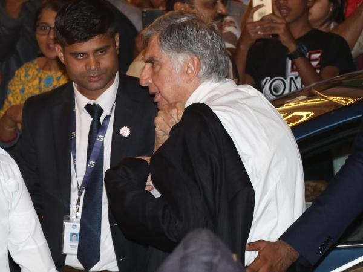Ratan Tata at the entrance
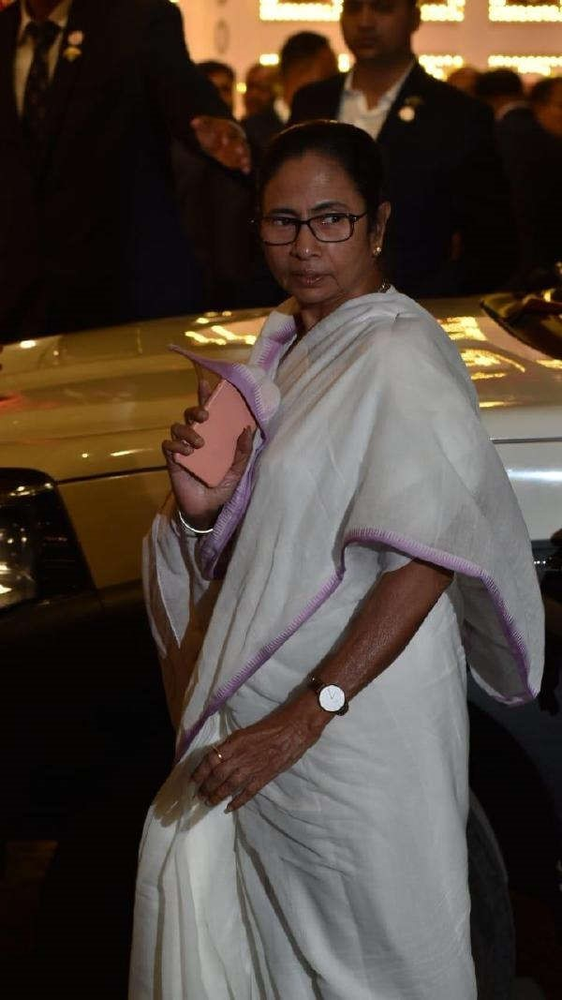Mamta Banerjee, Chief Minister of West Bengal
 P. Chidambaram
P. Chidambaram
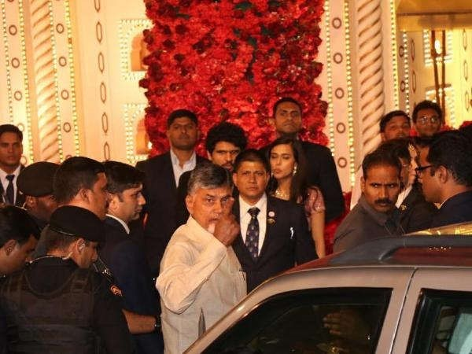N. Chandrababu Naidu, Chief Minister of Andhra Pradesh
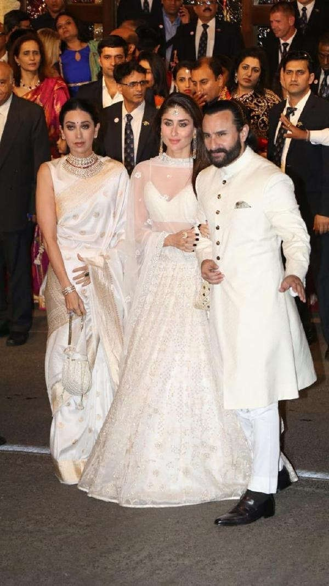Karisma Kapoor, Kareena Kapoor and Saif Ali Khan looking like royalty at the wedding
 Home Minister Rajnath Singh and Maharashtra CM Devendra Fadnavis at Antilia
Home Minister Rajnath Singh and Maharashtra CM Devendra Fadnavis at Antilia
 Alia Bhat in an elegant designer outfit
Alia Bhat in an elegant designer outfit
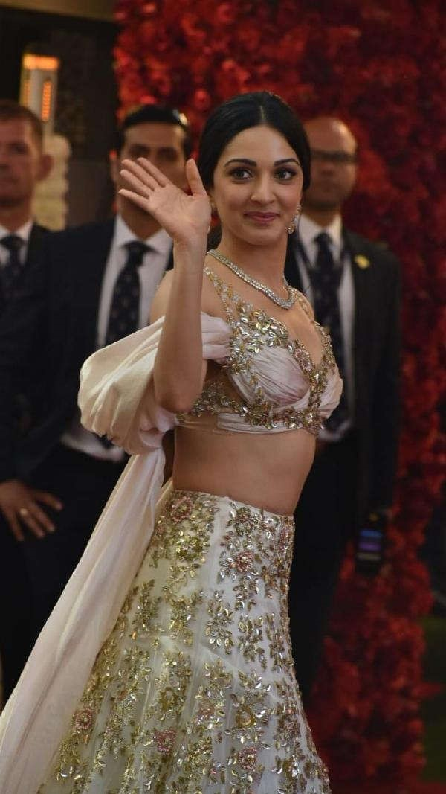Kiara Advani waving at the photographers
 Karan Johar in a bright yellow outfit
Karan Johar in a bright yellow outfit
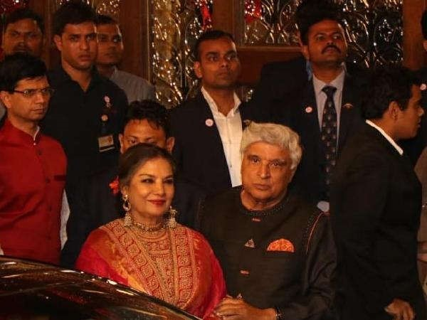Shabana Azmi and Javed Akhtar
 Shahid Kapoor with wife Mira Rajput
Shahid Kapoor with wife Mira Rajput
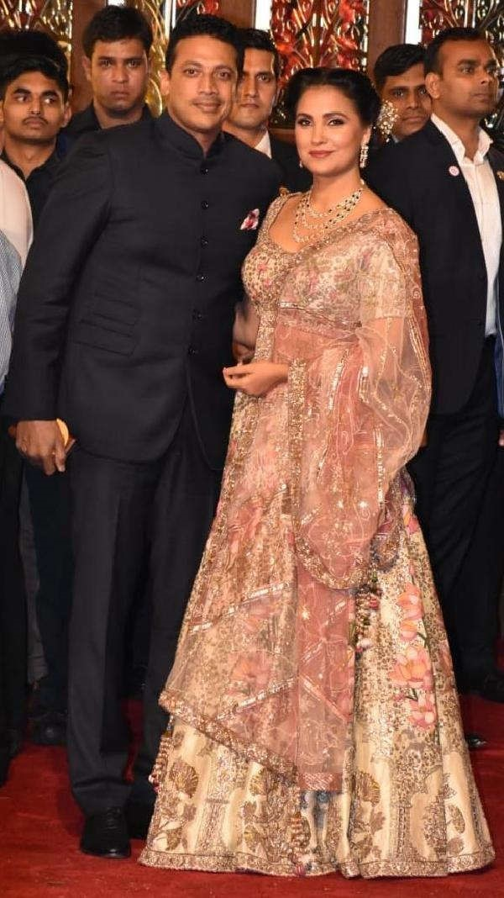Lara Dutta with husband Mahesh Bhupathi
 Shilpa Shetty looked stunning in a white lehenga
Shilpa Shetty looked stunning in a white lehenga
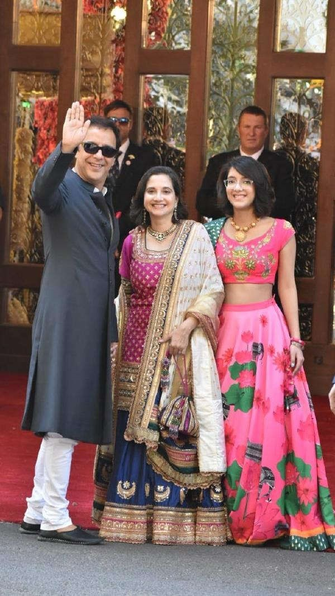Vidhu Vinod Chopra with wife Anupama Chopra and daughter Zuni Chopra
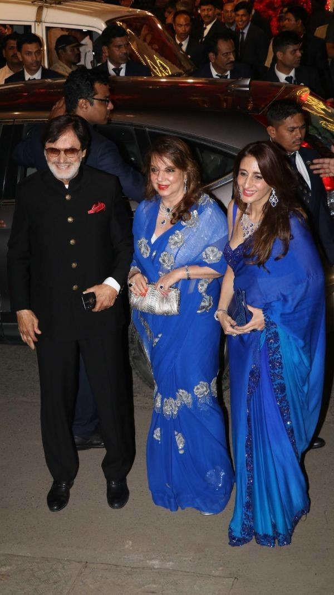Sanjay Khan with wife Zarine Katrak and daughter Farah Khan Ali.
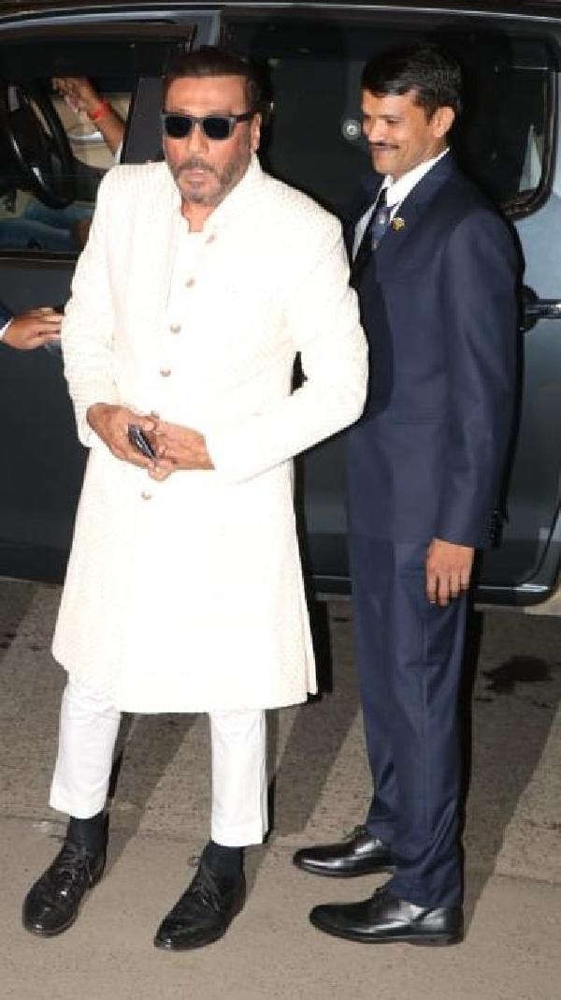Jackie Shroff posed for the camera
 Suniel Shetty with wife Mana Shetty
Suniel Shetty with wife Mana Shetty
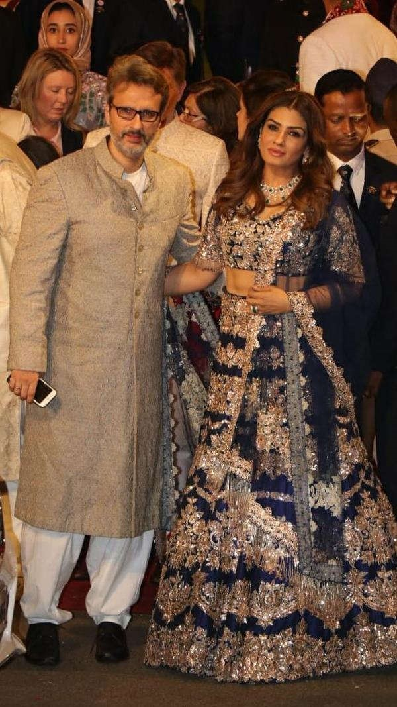Raveena Tandon with husband Anil Thadani
 Anil Kapoor with daughter Sonam Kapoor
Anil Kapoor with daughter Sonam Kapoor
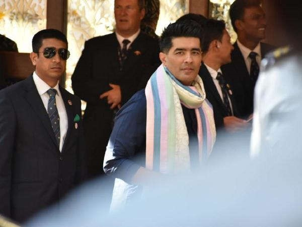Designer Manish Malhotra making a stylish entry
If the guest list was so powerful,one can only imagine the arrangements of food and decorations. Foodlink Caterers, based in Mumbai, were chosen to serve the guests at the wedding. According to the Wedding sutra, they used made-to-order cutlery and tableware to serve the guests at the status event. Exotic infusions of red fruits and hibiscus were served to the guests as a welcome drink. A team of food stylists were particularly flown down from Paris for the marriage and also the guests were treated to some exquisite French recipes along with traditional vegetarian Gujarati dishes. The guests were then served with premium desserts, together with chocolates flown in from round the world for the guests at the majestic wedding.
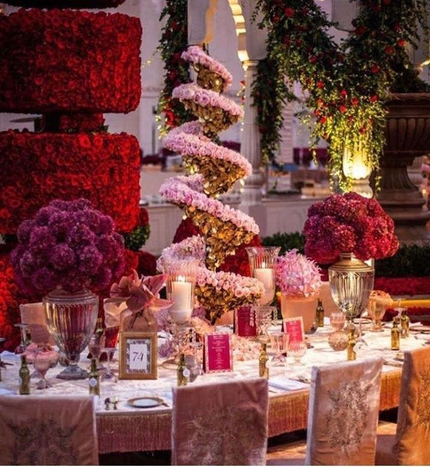